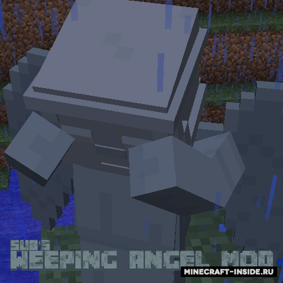
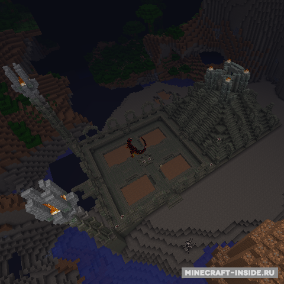
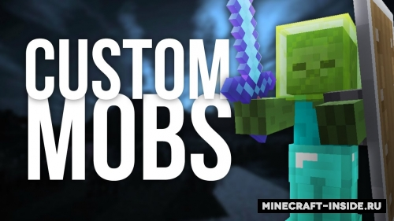
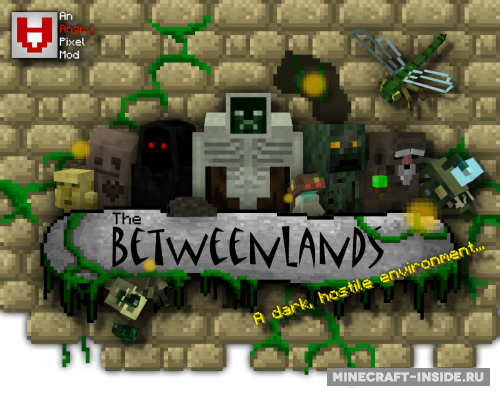
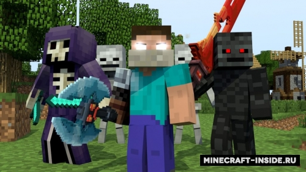
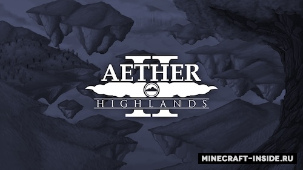
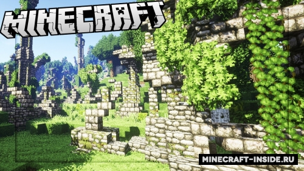

Weeping Angels добавит в игру жутких и крайне опасных существ - "Плачущих ангелов". Они безобидны, пока вы смотрите на них, однако стоит лишь отвести взгляд, и они проявят всю свою смертельную опасность.

Этот невероятный мод создан для разнообразия игрового мира, чтобы ваши путешествия в игре стали еще интереснее, он добавит в майнкрафт широкий спектр мобов, биомов и измерений, и все это будет связано непосредственно с джунглями.

Еще один мод, который пригодится создателям сборок. C его помощью можно будет призвать абсолютно любое существо (даже из модов) при помощи алтаря, заранее настроив в файле рецепты для тотема призыва. В настройках можно указать имя моба, его здоровье и силу атаки.

Этот атмосферный мод добавит в игру новое измерение "Betweenlands" - темное, мистическое болото, кишащее враждебными существами. Мод все еще в стадии разработки, поэтому вам могут встретиться различные ошибки..

Данный мод добавит в игру рейдеров - опасных мобов, сила которых будет расти с каждым днем. Рейдеры будут иметь скин и поведение реальных игроков, а их задачей будет найти и убить вас!

Вторая часть очень популярного мода, который вводит в игру новое измерение под названием Рай. Новый мир, состоящий из затерянных высоко в облаках летающих островов, населенных фантастическими существами и таинственными постройками.
